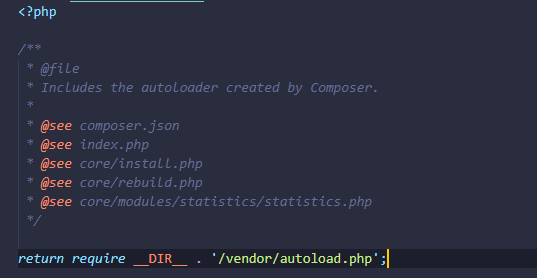
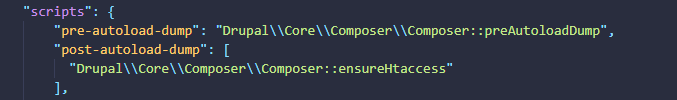
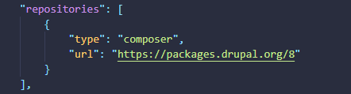
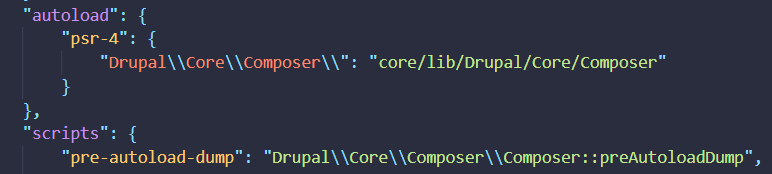

The Dependency Manager for PHP
We are going to see:
- What does Composer do?
- Composer autoloading
- Composer Scripts
- How does it deal with repositories
- Library versioning
Package manager VS
Dependecy Manager

Is a collection of software tools that automate the process of installing, upgrading, configuring, and removing computer programs for a computer's operating system in a consistent manner
Is specific to project. You manage all dependencies for project and that dependencies going to be saved on your project. When you start another project you should manage your dependencies again.
So...
-
Other package managers:
- You have a project that depends on a number of libraries.
- Some of those libraries depend on other libraries.
-
Composer:
- Enables you to declare the libraries you depend on.
- Finds out which versions of which packages can and need to be installed, and installs them (meaning it downloads them into your project).


Autoloading
For libraries that specify autoload information, Composer generates a autoload.php file . You can simply include this file and start using the classes that those libraries provide without any extra work:
Scripts
In Composer's terms, can either be a PHP callback (defined as a static method) or any command-line executable command. Scripts are useful for executing a package's custom code or package-specific commands during the Composer execution process.
We have "pre-" and "post-" scripts.
Custom repositories
By default Composer only uses the packagist repository. By specifying repositories you can get packages from elsewhere.
But what about all this numbers?

Define classes for a project
You define any classes to autoload into your composer.json mapping namespaces and directories
